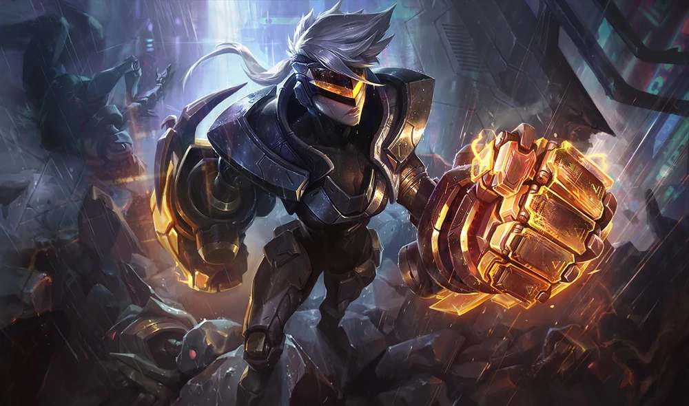
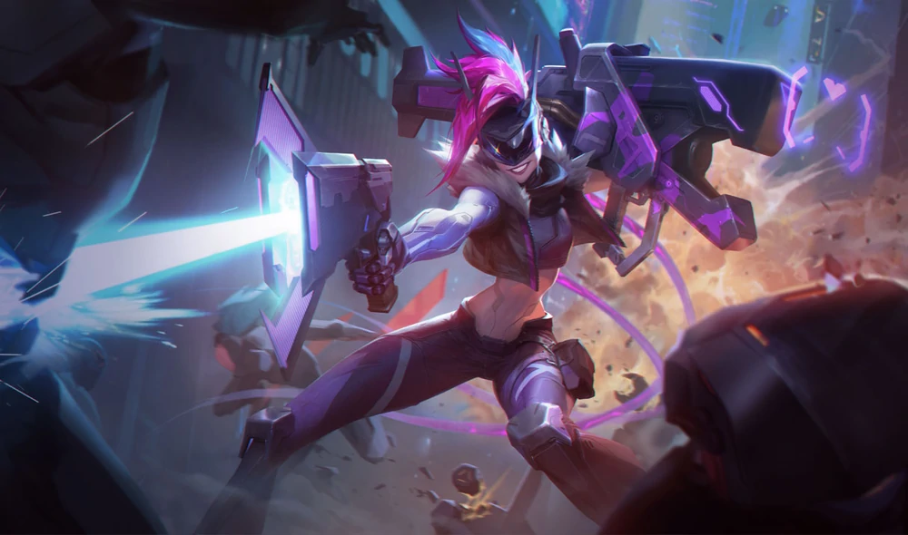
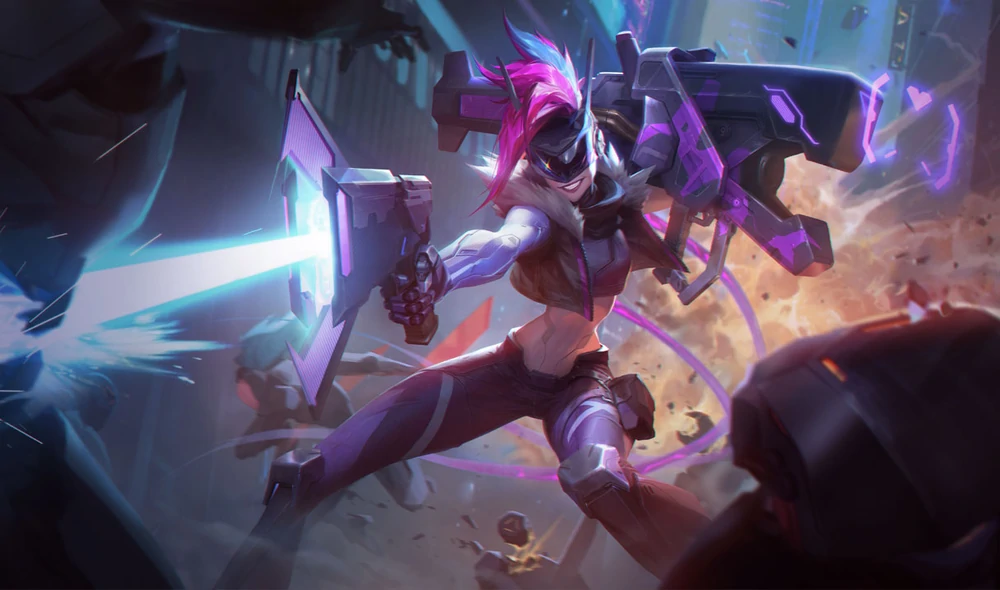

-
Project
Set in a Cyberpunk world, Project features champions as humans augmented by cybernetic enhancements as well as mechanized artificial intelligence.
 
PROJECT: Vi
Street-smart, brash, and always bluntly honest, Vi is a Central detective working to keep law and order in the neon city. Toughened from her days as a lower sector enforcer, Vi keeps the peace with a pair ATLAS gauntlets, and a mean right hook.PROJECT: Yi
One of the first concepts, Yi was held by PROJECT for extensive experimentation, and then finally freed by the G/NETIC rebels. His psyche may still contain some glitches, but his experimental hyperlight “alpha” blade serves the resistance with its precision balance.PROJECT: Leona
A heavy armor combatant, Leona has seen the truth behind the neon light of PROJECT, and now stands with Ashe and the G/NETIC rebellion. She carries a mounted ion charge shield, capable of blocking and stunning targets with its variable energy yield output.PROJECT: Lucian
Once a sentinel within the Command Line, Lucian has seen PROJECT for what they truly are. His dual ion-core Lightcaster pistols now serve G/NETIC and the human rebellion, bringing down their technological oppressors with brutal efficiency.PROJECT: Yasuo
Yasuo returned from advanced combat only to be accused of a crime he did not commit. Knowing that PROJECT's corporate leadership was somehow involved, Yasuo fights with the G/NETIC rebels, cutting away the lies of technology with his plasma coated blade.PROJECT: Fiora
Augmented for speed, Fiora uses her zero-pulse sword to fight alongside Ashe and the other members of G/NETIC. The full-length energy blade allows for flawless attack precision and maximum repel strength, while the spatially controlled atomic tip coating is most suited for single-target combat.PROJECT: Ashe
While on the frontlines of a corporate war, Ashe witnessed the human cost of PROJECT's ambition. Now the leader of the resistance group G/NETIC, Ashe has set her sights on nothing less than the downfall of the most powerful corporations.PROJECT: Ekko
A hacker prodigy picked up from the lower sectors by Ashe, it didn't take much to convince Ekko to help her take down PROJECT. Using a powerful key decrypter and a mind tuned for disruption, Ekko can always find a way into the code.PROJECT: Zed
Rising from the Command Line, Zed is a leader within PROJECT's counter-espionage units. He seeks out the G/NETIC rebels with split high frequency blades and molecular “solid smoke” projectors, favoring close-proximity and multiple angle target laceration.PROJECT: Katarina
Once an ambitious lieutenant in the G/NETIC rebellion, Katarina returned to the Command Line after a confrontation with Ashe herself. Her hyper edge daggers now serve PROJECT once more, but those rebels who knew her still hold out hope that she fights for them from the inside.
PROJECT: Akali
A cutting-edge PROJECT subject who somehow escaped the City's boundaries, Akali brings dire warnings of an untested superweapon to those living in the wasteland beyond. With time running out and no other options, these outcasts join her in an attempt to take the mega-corporation down… suspicious that their newfound ally might in fact be a double agent.PROJECT: Irelia
A PROJECT castoff who found sanctuary in the lawless wastes, Irelia has led other outcasts like her as they attempt to survive corporate assassins, murderous old-world technology, and widespread ecological collapse. Knowing Warwick could destroy everything she holds dear, she joins the attack on the City to end PROJECT once and for all.PROJECT: Jinx
Jinx volunteered for PROJECT conversion, never expecting that a critical power failure would scramble her memory core, leaving her a psychopath driven by the manic voices in her head. Seemingly obsessed with destruction for its own sake, she has begun to show signs of something far more sinister than mere memory fragmentation: the cold, calculating influence of Program.PROJECT: Pyke
An early PROJECT prototype, Pyke's untested upgrades left him violently unstable—too much so for his handlers, who junked him and threw his remains outside the walls of the City. Yet his cybernetic brain survived, rebuilding Pyke with salvaged scrap parts from all around him, and now their fragmented, overlapping memories mix with his own as they scream out for revenge.PROJECT: Warwick
Plucked from the wastelands by a PROJECT research cell, Warwick has been irrevocably transformed into a horrifying new stage of transhuman evolution—a weaponized monster stripped of all remorse, and programmed solely for violent suppression. Through the meddling of the ragtag outsiders, he escaped before being completed, and now rampages indiscriminately across the City.PROJECT: Jhin
After a botched surgery, Jhin went from being a black-market augment hacker to a notorious mechanized killer for hire. Still programmed with a taste for high-clearance upgrades, the tech Jhin takes from his victims has left him with a severe personality fragmentation, and a dark vision for the future of PROJECT... and humanity.PROJECT: Vayne
Augmented with classified tech, Vayne was once a member of PROJECT's counter-espionage unit. After she was betrayed by the corporation she served, she now stalks the shadows as a vigilante, searching for ways to break PROJECT and the technology that haunts her soul. -